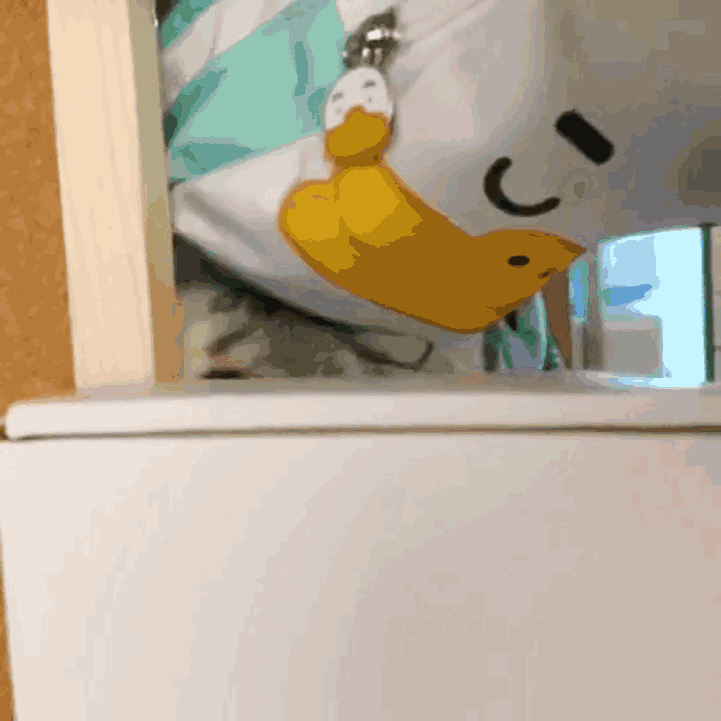

我的高中生活
在进入 华中科技大学（HUST, Huazhong University of Science and Technology），我住在江西的一个小县城里。它叫安福。
在我人生过去的18年里，最精彩的无非就是我在安福中学度过的六年时光了。安中历史悠久的，早在高2016年的夏末，我就踏入了安中的大门。可惜时光如水，流着流着就到了头。
这所校园的每一个角落，都留下了我的脚印，我六年的青春痕迹。在很多事情真的让我印象深刻。
大概是2021年？学校给全体高一高二学生组织了一次拉练活动。相当于远足踏青了属于是，就是徒步一个来回，走了一个上午，非常累，但是是真的好玩。

校庆当天下了小雨（这一点和华科一模一样），10月出头，天气还是比较冷的。
这是学校2021年运动会的场面：


学校不让带手机，我就拿着相机在校园里到处走走，随心情记录眼前的美好。相机很老了，大概年纪比我还大吧，虽然各方面功能都落后于时代了，但是还是挺好用的。它也陪伴了我大半个高三的时光。
在这六年里，高三这一年又是最让我难忘的。很多个挑灯鏖战的夜晚，也有很多次彻夜长谈。我们肩并肩，穿过高三这条长长的隧道，携手撑过漫长的夜晚。后来的暑假里，华科招生办也是举办了面向全体2022级新生的及第登科投稿活动，我拾起快要消散的回忆，趁着自己还没忘记，用文字记录当时的思绪。
漫长的暑假，大家陆陆续续去往全国各地，去往追梦的路上。有时候真的挺怀念高中生活的，但是我们必须要说再见了，那就祝我们都前程似锦啊。
我的大学生活
开学以后几个月的时间里，我在华科认识了很多有趣的人，特别是加入了校广播台编辑部以后，台里的友友们都非常好！学的东西也真的和高中不一样，学校对工科学生的实践能力好像要求挺高的。比如现在的这个网页，其实是新生实践课的结课作业，但是我怎么可能只把它当成是作业呢哈哈，就是说感觉学到了很多有用的东西！
对了，华科的脱单率是真的低。不愧是关山口男子职业技术学院，意料之中。
我的故事还在继续。

(未完待续)